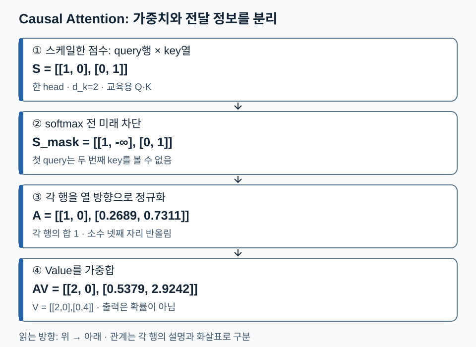
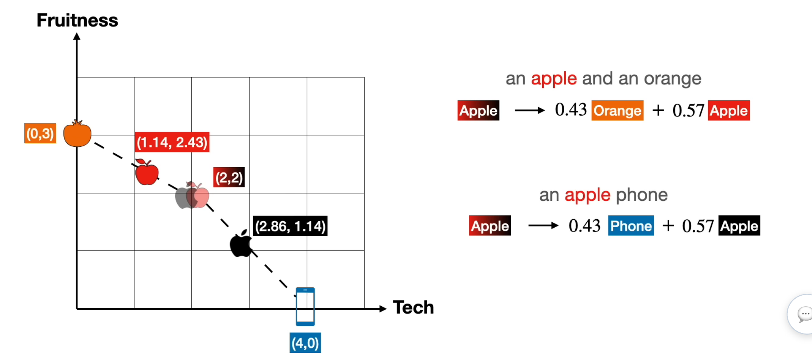
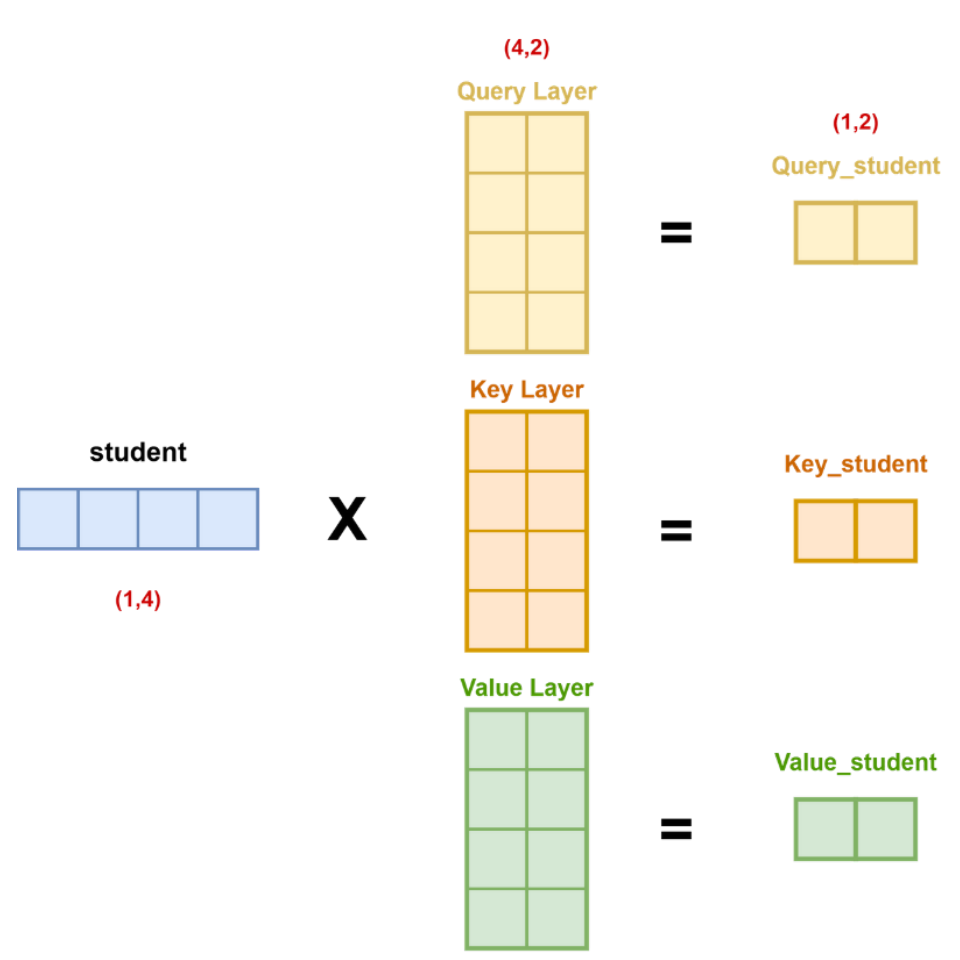
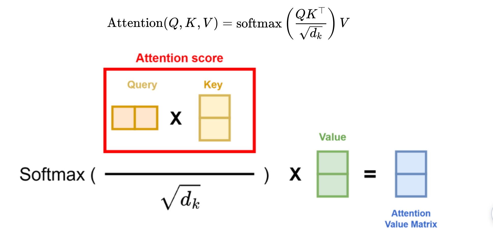
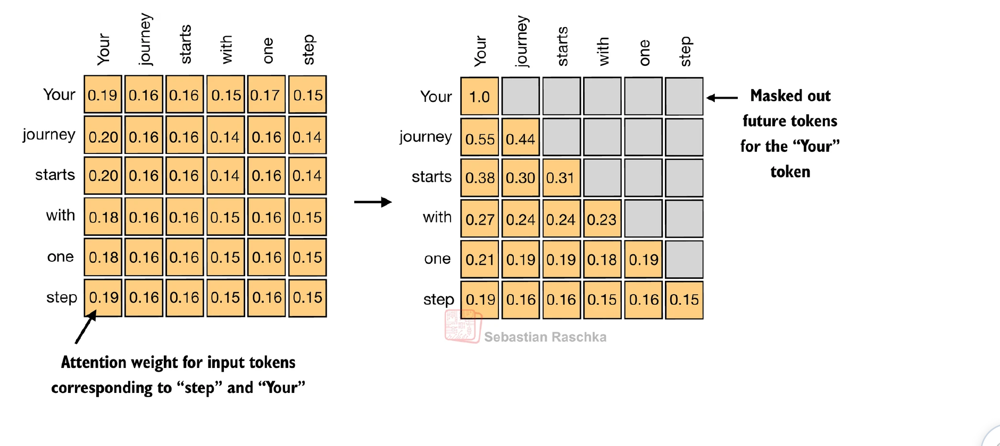

09. Attention의 계산 — 누구를 참고해서 어떤 정보를 가져올까
전체 학습 안내 · 이전: 입력 · 다음: GPT 구조 입문
Attention은 각 위치가 참고할 위치의 가중치를 정하고, 그 위치들이 가진 정보를 가중합하는 계산입니다. 이 단원을 마치면 Q·K·V의 역할, scaling·mask·softmax의 순서, head의 모양을 설명하고 작은 예제를 계산할 수 있어야 합니다. 수학의 내적·softmax와 임베딩이 선행 내용입니다.
기본 경로는 1→2→3절입니다. head 축 추적은 4절에서 이어집니다. ‘애플’이 과일인지 회사인지는 토큰 자체만으로 확정되지 않습니다. 주변 표현을 섞어 문맥에 맞게 표현을 바꾼다는 것이 104~107쪽의 중심 질문입니다.
1. Q·K·V는 ID나 고정 사전이 아니라 입력의 투영 결과
입력 표현을 행으로 모은 X[T,C]에서 서로 다른 학습 행렬을 곱합니다. Q=XW_Q, K=XW_K, V=XW_V입니다. Query는 무엇을 찾는지 나타내는 비교 기준, Key는 각 위치를 찾기 위한 단서, Value는 선택된 위치에서 전달할 내용입니다. 질문·주소·내용이라는 비유는 역할 설명이며 실제 검색 엔진이나 자연어 문장이 저장된다는 뜻은 아닙니다.
W_Q,W_K,W_V는 손실을 줄이는 학습 과정에서 갱신됩니다. 특정 head가 문법이나 지시 대상을 본다고 미리 프로그래밍하는 것은 아닙니다. Attention 점수도 곧바로 의미적 유사도나 사실성의 정답으로 해석할 수 없습니다.
교안 109쪽의 ‘항상 자기 자신을 우선 주목’은 일반 규칙이 아닙니다. Q와 K가 다르게 투영되면 자기 점수가 최고일 필요가 없고, 같은 벡터를 써도 다른 벡터의 길이와 방향에 따라 더 큰 내적이 나올 수 있습니다. Q·K 분리는 역할별 학습의 자유를 주지만, 공유 변형을 수학적으로 불가능하다고 단정하지 않습니다. 110쪽의 K·V 분리도 검색 단서와 전달 정보를 독립적으로 학습하게 하는 기본 설계로 읽습니다.
2. 손계산: 점수에서 문맥 벡터까지
한 head, 두 위치, d_k=2로 제한한 교육용 예시입니다. 학습된 투영 과정은 생략하고 Q·K·V를 입력으로 줍니다. 실제 측정값이 아닙니다.
Q = [[√2,0], [0,√2]]
K = [[1,0], [0,1]]
V = [[2,0], [0,4]]
먼저 S=QKᵀ/√d_k를 계산하면 [[1,0],[0,1]]입니다. 행은 질문하는 query 위치, 열은 참고할 key 위치입니다. 첫 행의 1은 첫 query와 첫 key의 점수입니다. 점수 행렬의 두 축 길이가 같아도 두 역할은 다릅니다.
아직 causal mask를 적용하지 않았다고 합시다. 각 행의 열 방향으로 softmax하면 A≈[[0.7311,0.2689],[0.2689,0.7311]]입니다. 첫 출력은 A₁₁×(2,0)+A₁₂×(0,4)≈(1.4621,1.0758)입니다. 표시한 A는 소수 넷째 자리 반올림이지만, 중간 계산에는 반올림 전 값을 사용하고 최종 결과에서 반올림합니다. 두 번째 출력은 약 (0.5379,2.9242)입니다. 행마다 합이 1인 것은 가중치 A이며, 가중합 출력의 좌표 합이 1일 필요는 없습니다.
1/√d_k는 내적 점수 규모를 완화합니다. 독립·평균 0·분산 1 같은 단순 가정에서 d_k개 곱의 합은 분산 d_k, 표준편차 √d_k를 가집니다. 이를 √d_k로 나누면 분산이 약 1이 됩니다. 교안 115쪽의 ‘dk로 나눔’이라는 문장은 표시 수식의 √d_k로 읽어야 합니다. 실제 학습된 Q·K가 이 가정을 정확히 만족한다는 뜻은 아닙니다.
3. Causal mask: 다음 토큰 정답을 훔쳐보지 않게 하기
위 예시에 왼쪽부터 오른쪽으로 생성하는 조건을 추가합니다. 첫 위치는 아직 두 번째 입력을 볼 수 없어야 합니다. softmax 전에 미래 위치를 -∞로 바꿉니다.
스케일 점수 S mask 뒤 점수 softmax A 출력 AV
[[1,0], [[1,-∞], [[1,0], [[2,0],
[0,1]] [0, 1]] [0.2689,0.7311]] [0.5379,2.9242]]
첫 행의 미래 가중치는 exp(-∞)=0이 되고 나머지 유효 위치로 다시 정규화됩니다. 0으로만 점수를 덮으면 exp(0)=1이라 완전히 차단되지 않습니다. softmax 뒤에 0만 곱하는 방식도 유효 위치 합이 1로 유지되지 않을 수 있습니다.
자기 위치는 볼 수 있습니다. 입력 [11,4,8]의 두 번째 위치는 토큰 4까지 보고 그 다음 정답 8을 맞히기 때문입니다. 정답 이동과 causal mask는 함께 이해해야 합니다. padding mask는 별도 제약이며, 한 행의 모든 key가 가려진 상황은 NaN 등 구현 문제를 만들 수 있으므로 유효 key가 존재하도록 데이터와 mask 규칙을 정해야 합니다.
원문 그림 주의: 118쪽 왼쪽의 S자 곡선은 단일 입력 sigmoid 모양입니다. 여러 점수를 함께 정규화하는 softmax 전체를 단일 스칼라 곡선으로 읽지 않습니다. softmax는 식과 오른쪽의 벡터→분포 변환을 기준으로 이해하세요.
Attention map은 A의 각 행에서 어디에 큰 가중치가 있는지 읽습니다. 교안 114쪽의 색 농도와 119쪽의 삼각형은 서로 다른 것, 즉 학습된 참조 가중치와 허용 참조 범위를 보여줍니다. 큰 가중치를 그 모델 판단의 완전한 인과 설명으로 보지는 않습니다.
다음 그림은 같은 Q·K·V 예시에 causal mask를 적용한 경로입니다. 점수→미래 차단→행별 정규화→Value 가중합 순서로 읽으세요.

첫 출력이 (2,0)으로 바뀌는 이유는 첫 위치가 자기 Value만 볼 수 있기 때문입니다. 두 번째 출력은 미래가 없으므로 mask 전후가 같습니다. 그림의 소수는 반올림값이며 본문의 중간식을 기준으로 재계산할 수 있습니다.
4. 다음 장을 위한 head 축 예고
각 head는 서로 다른 투영으로 Attention을 계산합니다. head 결과를 마지막 특징 축으로 연결한 뒤 출력 투영을 적용합니다. 여러 head를 ‘각각 반드시 특정 의미를 담당하는 전문가’로 고정 해석하지 않습니다.
배치 B=2, 길이 T=3, 전체 폭 C=8, head 수 h=2이면 head 폭 d_h=C/h=4입니다. 기본 구현에서 C는 h로 나누어떨어져야 합니다.
| 단계 | 모양 | 무엇이 달라졌나 |
|---|---|---|
| X, Q, K, V | [2,3,8] |
토큰당 전체 폭 8 |
| head 분리·축 교환 | [2,2,3,4] |
배치·head·위치·head 폭 |
QKᵀ/√4 |
[2,2,3,3] |
마지막 두 축은 query·key 위치 |
| A와 V 곱 | [2,2,3,4] |
각 head의 문맥 벡터 |
| 축 복원·연결 | [2,3,8] |
head 2개×폭 4 |
| 출력 투영 | [2,3,8] |
잔차에 더할 전체 폭 |
transpose한 텐서는 메모리 배치가 연속적이지 않을 수 있으므로 구현의 reshape/view 조건을 확인합니다. head 수 2는 한 층 안의 병렬 분할 수이며, 층 수는 이 과정을 몇 번 순차 반복하는가입니다. 121~123쪽의 head×layer 지도는 그 두 축을 함께 펼친 그림입니다. 모델별 숫자는 원문 사례로 읽고 모든 GPT 구조의 상수로 외우지 않습니다.
5. 확인 질문
- 2절의 첫 query만
[0,0]으로 바꾸고 causal mask를 쓰지 않으면 첫 출력은? - 같은 변경 후 causal mask를 적용하면 첫 출력은?
- B=1,T=5,C=12,h=3일 때 점수와 head 출력의 모양은?
- ‘첫 위치의 미래 점수를 0으로 바꾸면 미래 확률도 0’이라는 계산을 반박하세요.
해설과 돌아갈 위치
- 점수
[0,0]→확률[0.5,0.5]→출력(1,2). 2절. - 점수
[0,-∞]→확률[1,0]→출력(2,0). 3절. - head 폭 4, 점수
[1,3,5,5], head 출력[1,3,5,4]. 4절. - softmax는 지수화하므로 exp(0)=1입니다. 유한 점수 0은 배제 표시가 아닙니다. 3절.
다음 연결: Attention 출력은 다음 토큰 번호가 아니라 문맥 벡터입니다. 다음 단원에서 이 벡터가 GPT 전체 구조의 어디로 가는지 연결합니다.
6. 원문 그림을 수식으로 다시 읽기
이 절은 원문 104~119쪽의 그림에 숨은 계산과 제한을 드러낸다. 좌표가 설명용인지 실제 모델의 측정값인지 먼저 구분한다.
애플의 의미가 이동한다: 104~106쪽
104쪽은 스포츠·건물·과일·운송수단을 2차원 위치로 묶고 Apple 좌표를 묻는다. 105쪽은 같은 Apple을 과일과 회사 두 의미로 그려 정적인 한 점의 한계를 드러낸다. 106쪽의 가로축은 Tech, 세로축은 Fruitiness인 교육용 좌표다. 실제 임베딩 축에 항상 이러한 이름을 붙일 수 있다는 뜻은 아니다.
다음 그림에서 같은 출발점 (2,2)가 어느 문맥으로 이동하는지 본다.

주황색 Orange는 (0,3), Phone은 (4,0)이다. 그림의 가중치를 그대로 쓰면 0.43(0,3)+0.57(2,2)=(1.14,2.43), 0.43(4,0)+0.57(2,2)=(2.86,1.14)다. 두 계수 합은 1이고 가중합은 두 점 사이에 놓인다. 이 예시는 문맥 혼합의 직관이며 Q·K를 학습해 0.43을 얻는 과정까지 제시한 실험은 아니다.
방향과 역할: 107~112쪽
107쪽에서 번역 Attention은 서로 다른 언어 시퀀스를 잇고, Self-Attention은 같은 시퀀스 안의 위치를 잇는다. 선이 연결되었다고 문법적 원인까지 증명되는 것은 아니다. 108쪽의 student 벡터는 [1,4], 투영 가중치는 [4,2], 결과 Q·K·V 각각은 [1,2]이다. 다음 그림에서 세 경로는 입력만 공유하고 행렬은 별도로 학습한다.

109쪽 설명의 적용 범위를 구별하자. 같은 벡터 a,b를 쓸 때 a·b=b·a는 참이다. 그러나 a=(1,0), b=(2,0)이면 a·b=2>a·a=1이므로 항상 자기 자신이 최대는 거짓이다. 독립 투영은 q_i·k_j와 q_j·k_i가 달라질 자유를 제공한다. 단, Q·K 분리만으로 순서 정보가 저절로 생기지는 않는다. 위치정보와 causal 제약도 함께 작용한다.
110쪽은 Key의 검색 기준과 Value의 전달 내용을 분리한다. 111쪽의 Tom Query (0.1,0.1,0.6,0.1,0.1)와 meat Key (0.2,0.2,0.2,0.2,0.2)의 내적은 0.20이다. 종 좌표가 기여하는 항은 0.12로 가장 크지만 Key가 모두 같으므로 총점만으로 종을 구별했다는 결론은 안 된다. 실제 좌표를 나이·지역·종·크기·색깔로 해석하는 것은 이 그림의 비유다. 112쪽의 다음 토큰 손실은 투영 가중치까지 역전파되어 참조 패턴을 학습하게 한다. 관계 라벨을 사람이 매번 정해 주는 방식이 아니다.
점수·가중치·출력은 서로 다르다: 113~118쪽
일반 모양은 Q[Tq,dk], K[Tk,dk], V[Tk,dv]다. S=QKᵀ/√dk는 [Tq,Tk], A=softmax(S+M, key축)도 [Tq,Tk], Z=AV는 [Tq,dv]다. M은 허용 위치 0, 금지 위치 −∞인 덧셈 마스크다. Self-Attention에서는 보통 Tq=Tk=T다. dk는 Q·K의 한 head 폭이며 전체 은닉 폭이나 토큰 수가 아니다.

그림의 빨간 상자는 내적 점수, softmax 뒤는 가중치, 파란 출력은 Value의 혼합이다. 가중치는 비음수이고 유효 key에 대해 합이 1이지만 출력 Z는 음수 좌표를 가질 수 있고 확률분포일 필요가 없다. 교육용 보충으로 softmax(s)_j=exp(s_j-max(s))/Σ exp(s_k-max(s))를 쓰면 큰 지수의 수치적 넘침을 줄인다. 유효 원소가 없는 행은 이 식으로도 해결되지 않으므로 별도로 처리해야 한다.
114쪽 지도는 행이 query, 열이 key다. journey 행 (0.13,0.23,0.23,0.12,0.10,0.15)은 표시값 합이 0.96이므로 표의 표시 수치만으로 정확한 확률분포를 재현할 수 없다. 최근접 소수 둘째 자리 반올림 오차의 최대 합은 6×0.005=0.03이므로 0.04 차이를 그것만으로 설명할 수도 없다. 원문 수치를 새 예제의 정답으로 재사용하지 않고 2절의 완결된 예제로 검산한다. 116쪽도 중간 위치가 생략되어 전체 합을 복원할 수 없다. 표시된 q=(0.4,1.4), k=(0.3,0.7)의 직접 내적은 1.10인데 도식에는 1.2가 있어, 표시 전 정밀값 여부를 알 수 없다. 미확인: 원시 텐서와 누락된 항. 검증 가능한 결론은 각 Value에 자기 가중치를 곱해 모두 더한다는 연산 경로다.
117쪽 creature 그림은 fluffy·blue의 문맥을 합쳐 표현을 바꾸는 비유다. 가중치가 바뀌는 것과 모델이 실제 그림을 생성하는 것은 별개의 주장이다. 118쪽 S자 곡선은 sigmoid형 단일 입력 그래프이므로 softmax 정의로 사용하지 않는다. 두 점수 (0,0)의 softmax는 (0.5,0.5)이고 (10,10)도 같다. 절대값보다 같은 행 내 상대 차이가 중요하다.
삼각형은 허용 범위다: 119쪽
다음 그림에서 회색 칸과 남은 칸의 확률 재분배를 구별한다.

첫 행은 자기 위치만 남아 가중치가 1이다. 두 번째 행은 두 위치만 비교한다. 마지막 행은 미래 열이 없어 모두 허용된다. 원문 왼쪽·오른쪽 표를 단순한 0 곱셈으로 연결하면 안 된다. 정확한 마스킹은 softmax 전 점수에 적용하고 유효 위치에서 다시 정규화한다. Attention의 causal mask와 학습 손실에서 정답 일부를 제외하는 loss mask는 적용 대상부터 다르다.
추가 확인: dk=64에서 표준편차가 8인 내적을 무엇으로 나누는가? √64=8이다. 64로 나누면 분산은 1/64가 되어 의도와 다르다. 가중치 (0.25,0.75)와 Value (-2,4),(2,-4)의 출력은 (1,-2)이며 확률분포가 아니다.
보충·정정 근거: Attention 원논문 §3.2와 각주 1. 원문의 Q·K 역할 비유와 그림의 수치를 구별했고, 반례와 손계산은 이 교재의 교육용 보충이다.
페이지별 상세 대조
핵심 학습은 위 본문으로 완결된다. 아래는 개별 슬라이드의 그림·수치·정정 근거를 찾는 경로다.
- 102쪽: Attention: 단원 시작
- 103쪽: GPT 안에서 Attention의 위치
- 104쪽: Apple의 좌표를 묻는 임베딩 지도
- 105쪽: Apple의 다의성: 과일과 회사
- 106쪽: 문맥 가중합으로 Apple 좌표 이동
- 107쪽: 참조 관계와 Self-Attention
- 108쪽: 임베딩에서 Q K V 만들기
- 109쪽: Query와 Key의 역할 분리 및 대칭성
- 110쪽: Key와 Value: 검색 단서와 전달 내용
- 111쪽: 특징별 내적 기여의 예
- 112쪽: 다음 토큰 학습과 Attention 패턴
- 113쪽: Scaled Dot-product Attention의 전체 식
- 114쪽: Attention map의 행과 열
- 115쪽: 스케일 분모는 dk가 아니라 √dk
- 116쪽: query 하나가 모든 Value를 합치는 흐름
- 117쪽: 문맥을 더한 creature 표현
- 118쪽: Softmax와 S자 그림의 구별
- 119쪽: Causal masking의 삼각형